Најнови вести од Македонија и светот
Николоски: Околу 1200 нови добро платени работни места се отвараат со забрзување на изградбата на автопатот Прилеп-Битола
Огромна можност за многу луѓе да најдат работно место, но исто така и да стекнат искуства и знаења коишто е ретка прилика да се стекнат, затоа што не се гради секој ден автопат....
Две малолетнички нападнале 12-годишно девојче во соблекувална во спортска сала во Илинден
Дванаесетгодишно девојче било физички нападнато од две малолетнички во соблекувална во спортска сала во општина Илинден. Случајот бил пријавен на 26 ноември во СВР Скопје од тат...
Јаневска: Не гледам причина за протест ако на студентите им се нуди повеќе
Не гледам логика да се протестира за мерка со која на студентите им се нуди повеќе од она што го имаат во моментов, изјави министерката за образование и наука Весна Јаневска, ко...
Јаневска: Над 650 ученички идеи покажуваат дека кај младите постои силен претприемачки дух
Повеќе од 650 бизнис-идеи пријавени на натпреварот на Brainster Next покажуваат дека образовниот систем ги поттикнува младите да размислуваат претприемачки, оцени министерката з...
Мицкоски на работна средба со раководството на РЕК Битола и АД ЕСМ
Континуираната комуникација, координација и посветеност на институциите и вработените се важни за стабилно функционирање на енергетскиот систем и обезбедување сигурно производст...
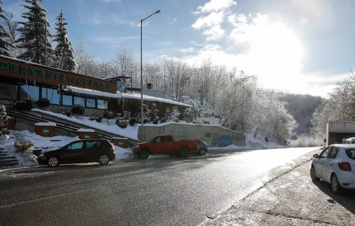
Магла на повеќе патни правци и на планинските превои Стража, Плетвар и Страцин
ЈП „Македонијапат“ апелира на внимателно управување со возилата, почитување на поставената сообраќајна сигнализација, како и прилагодување на брзината спрема условите на патот. ...
Почуствуван земјотрес во Битола, Охрид и блиската околина
Земјотрес со интензитет од III степени според Европската макросеизмичка скала утрово е почуствуван во Битола, Охрид и блиската околина. информираат од Сеизмолошката опсерваториј...
ВМРО-ДПМНЕ: Покачувањето на цената на парното греење е одлука на Регулаторната комисија за енергетика, а не на Владата
И тоа не зависи ниту од ВМРО-ДПМНЕ, ниту од СДС – се посочува во реакцијата на ВМРО-ДПМНЕ, што МИА ја пренесува интегрално. Според споредбените пресметки, граѓаните во Софија пл...
Николоски: Забрзувањето на изградбата на автопатот Прилеп-Битола отвора 1.200 добро платени работни места
Со забрзување на динамиката на изградба на автопатот Прилеп-Битола, се отвораат некаде околу 1. нови работни места, можност за вработување на околу 1. луѓе, што за целиот Пелаго...
Димитриеска-Кочоска прими престижно меѓународно признание за Македонија за управувањето со јавниот долг – остварена буџетска заштеда од 3,2 милиони евра
Наградата беше врачена во рамки на регионалниот настан „Global Banking & Markets: CEE, Central Asia & Türkiye 2026“ и претставува меѓународно признание за квалитетот на трансакц...
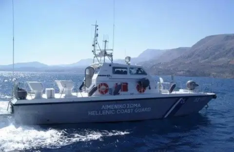
Во осум одделни операции спасени над 500 мигранти јужно од грчките острови Гавдос и Крит
Во текот на ноќта, крајбрежната служба на Грција интервенирала во спасување на вкупно 549 мигранти, кои со десет чамци биле откриени во морскиот дел јужно од грчките острови Гав...
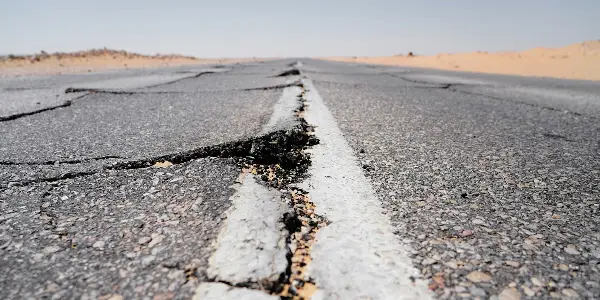
Земјотрес со јачина од 4 степени регистриран во Грција, почувствуван во Битола и Охрид
Земјотрес со локална магнитуда од 4 степени според Рихтеровата скала утрово во 08 часот и 47 минути е регистриран на територијата на соседна Грција, информираат од Сеизмолошката...
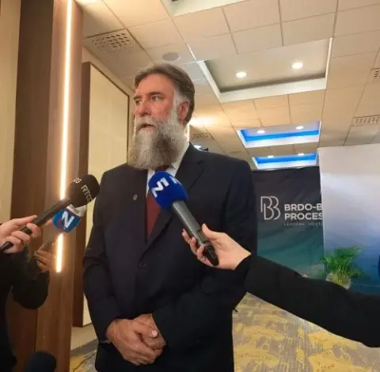
Чупиќ: Со лидерите од регионот, кои присуствуваа на Процесот Брдо-Бриони, воспоставивме нов квалитет на комуникација
Не сум потполно запознаен, нешто претседателката Гордана Сиљановска-Давкова прокоментира, но би се воздржал за односот меѓу Македонија и Бугарија. И тие беа презадоволни со тоно...
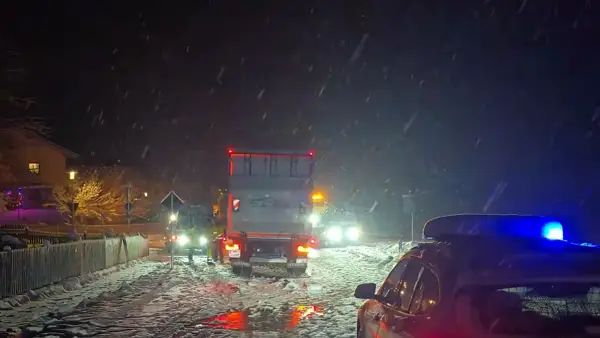
Повеќе од 400 несреќи во Баварија поради снег, се превртуваа камиони
Камиони се превртени, додека автопатот кон Австрија беше затворен за сообраќај. Полицијата во Горна Баварија регистрираше повеќе од 400 сообраќајни несреќи, пишува денес „Билд“....
Во Франција нови протести – денеска против насилството врз жените
Феминистичките организации, синдикатите, младите и движењето „Жолти елеци“, повикаа денеска на нови демонстрации ширум Франција против насилството врз жените, во услови на опште...
Најмалку седум ученици загинаа а 99 се ранети во експлозија близу училиште во Авганистан
Седум ученици загинаа, а уште 99 други беа повредени во силна експлозија во близина на училиште во покраината Кунар во североисточен Авганистан, потврди портпаролот на Министерс...
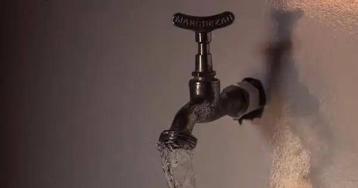
Водата од „Тасино чешмиче“ во Центар не е безбедна за пиење, утврден е зголемен вкупен број колиформни бактерии
Водата од левата и десната јавна чешма „Тасино чешмиче“ во Скопје не ги исполнува пропишаните стандарди за пиење, покажале бактериолошките анализи доставени до Општина Центар од...
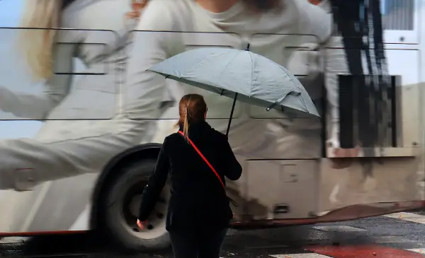
Најмногу дожд паднал во Охрид - утрово најстудено во Тетово
Најниска температура утрово е измерена во Тетово шест степени, во Скопје, Берово, Крива Паланка, Охрид седум степени, во Битола осум степени, во Виница и Демир Капија девет степ...
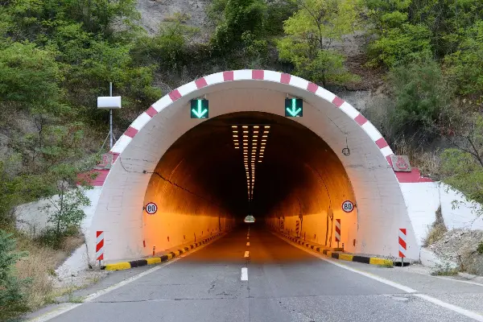
Шестчасовен прекин на струјата денес во тунелот Катланово
Прекинот е најавен поради замена на дрвен столб со бетонски на 10-киловолтен далекувод кон тунелот Катланово, од страната на селото Бадар. Тунелот Катланово денес, 28 ноември, ќ...
Премиерот Мицкоски денеска е во работна посета на РЕК „Битола“
Претседателот на Владата, Христијан Мицкоски денеска е во работна посета на РЕК Битола, каде што одржа средба со раководствата на рударско- енергетскиот Комбинат и на АД ЕСМ.
пред 1 час
Шпанското фламенко на групата „Сарсале“ од Барселона ја освои битолската публика
Синоќа, на сцената во големата сала на Центарот за култура во Битола, настапи групата „Сарсале“ од Барселона, која пред публиката приреди целовечерен концерт посветен на традици...
пред 2 часа
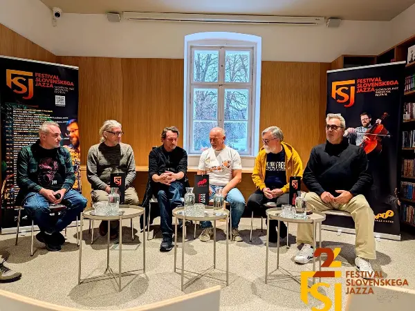
Битолскиот Џез фактори фестивал дел од меѓународната дебата за живата музика во Словенија
На дебатата покрај Сашо Поповски од македонскиот Џез фактори фестивал учествуваа и Драган Влајниќ од српскиот Џез фестивал Кикинда (JazzFestival Kikinda), Богдан Бенигар од слов...
пред 5 часа
Кривопаланчанец признал кражба во куќа, полицијата го пронашла
годишен жител на Крива Паланка е пронајден откако е пријавена кражба во куќа, а тој во службен разговор го признал делото. По преземени мерки, полицијата го пронашла Р. Б. од Кр...
Приведени лица за повеќе случаи на семејно насилство, закани и злоупотреба во семејството
МВР информира и дека е поднесена кривична пријава против 33-годишен жител на Кочани поради сомнение за кривично дело „загрозување на сигурноста“, откако физички ја нападнал свој...
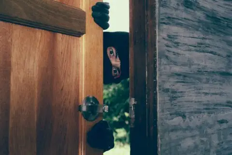
Претрес во Скопје, пронајдени пари, поднесена кривична пријава
Партизански Одреди” во Скопје каде одземени се парични средства во износ од 789. денари, од страна на ОКР Карпош при СВР Скопје се преземени се мерки и обезбедена е Наредба за п...

Jazz Factory Festival на 22. Фестивал на словенечкиот џез: Живата музика во следните десет години
И како да се зачуваат најважните вредности на живата музика – непосредноста, слободата и автентичната енергија што се создава во директниот контакт меѓу музичарите и публиката?О...
„Галена, мазена, пазена“- самостојна изложба на Ана В’чкова од вечерва во КСП Центар Јадро
Сликата станува кожа…“ — Извадок од кураторскиот текст на Ана Франговска. Во новиот циклус на Ана Вчкова токму таа противречност станува појдовна точка на визуелното истражување.
Животните не се таму некаде: Нова меѓународна изложба во МСУ – Скопје
Покрај дела на меѓународни уметници, претставени се и избрани дела од Колекцијата на солидарноста на Музејот на современата уметност – Скопје, како и дела на македонски уметници...
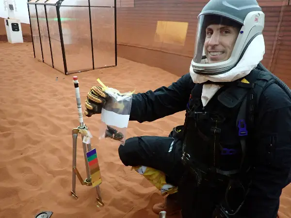
Повеќе од една година без прозорци и разговори во живо: Екипажот на НАСА излезе од „Марс“
етворица волонтери на американската вселенска агенција НАСА излегоа од симулираниот марсовски хабитат Mars Dune Alpha во Хјустон на 31 октомври 2026 година, поминати точно 378 д...
пред 1 час
Вештачката интелигенција почнува да ја планира кујната: Помалку фрлена храна и попрецизни набавки
По промените во организацијата – меѓу кои и воведување посебен ресторан за персоналот, станици за подготовка пред гостите и помали порции на хотелскиот буфет – отпадот од храна ...
пред 5 часа
БОРБАТА ЗА ВЕШТАЧКАТА ИНТЕЛИГЕНЦИЈА ВЛЕЗЕ ВО ДРАМАТИЧНА ФАЗА! Во игра се интересите на најголемите технолошки компании - што следува?
БОРБАТА ЗА ВЕШТАЧКАТА ИНТЕЛИГЕНЦИЈА ВЛЕЗЕ ВО ДРАМАТИЧНА ФАЗА!
пред 6 часа
Групата „Мартеница“ од Турција вечерва на фестивалот „Музика од светот“ освен турска, ќе презентира и македонска етно музика
Меѓународниот фестивал „Музика од светот“ вечер продолжува со промоција на изложба со наслов „Музика во слика и слика во музика“ чиј автор е уметницата Жаклина Николовска.
пред 2 часа
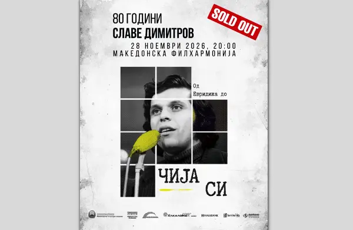
„Од Евридика“ до Чија си“- концерт на Националниот џез оркестар посветен на 80. роденден на Славе Димитров
Вечерашниот концерт „Од Евридика до Чија си“, посветен на 80. роденден на композиторот Славе Димитров, е целосно распродаден.
пред 2 часа
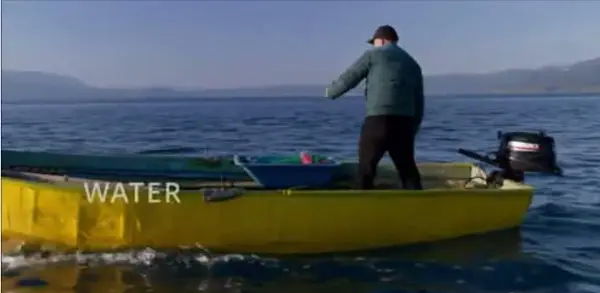
Документарниот филм „Water Paradises in Europe – Lake Ohrid“ на 5 декември на фестивал во Германија
Особено ме радува што приказната за Охридското Езеро продолжува да патува низ Европа, да допира до нова публика и да ја пренесува убавината и значењето на нашето природно и култ...
пред 2 часа
Ведрана Тунески освои бронза на ЕП во таеквондо
Младата македонска таеквондистка Ведрана Тунески со успех го заврши настапот на Европското првенство во Букурешт, освојувајќи го бронзениот медал. Претходно таа освои бронзен ме...
(Видео) Фуриозен финиш на Денвер во Солт Лејк Сити
Јокиќ го заврши натпреварот со 17 поени (7/19 од поле, 2/3 од три), 15 асистенции и девет скока за 36 минути. Нагетс го решија натпреварот во последните неколку минути, прво со ...
Германија, Хрватска и Полска се пласираа на СП во кошарка
Бранителот на титулата Германија, Хрватска и Полска обезбедија синоќа пласман на Светското првенство кое идната година ќе се одржи во Катар. Кошаркарите на Хрватска до својот пр...
Зошто треба да го оставите исечканиот лук да отстои 10 минути пред готвењето?
Меѓутоа, кога згмечениот лук бил оставен да отстои десет минути пред да се стави во микробранова печка, неговиот заштитен ефект бил повратен. Истражувањата покажуваат дека еден ...
Нова жртва во снежното невреме во Виена: Седумгодишно дете е тешко повредено додека стоело на автобуска станица
Несреќата се случила за време на обилни снежни врнежи додека мајката и синот стоеле на автобуска станица на Ендрештрасе во Виена, објави австрискиот весник Кронен Цајтунг.
пред 1 час
Река однесе мост- возачот се спаси во последен момент, снимката е морничава (ВИДЕО)
Тој додаде дека во селата Мајзас и Ортон има клиники со служби за итна медицинска и акушерска нега, и дека на жителите не им недостасуваат лекови и храна.
пред 3 часа
Саботажа сезона 13 бр. 22
Саботажа сезона 13 бр. 22
Nov 26, 2026